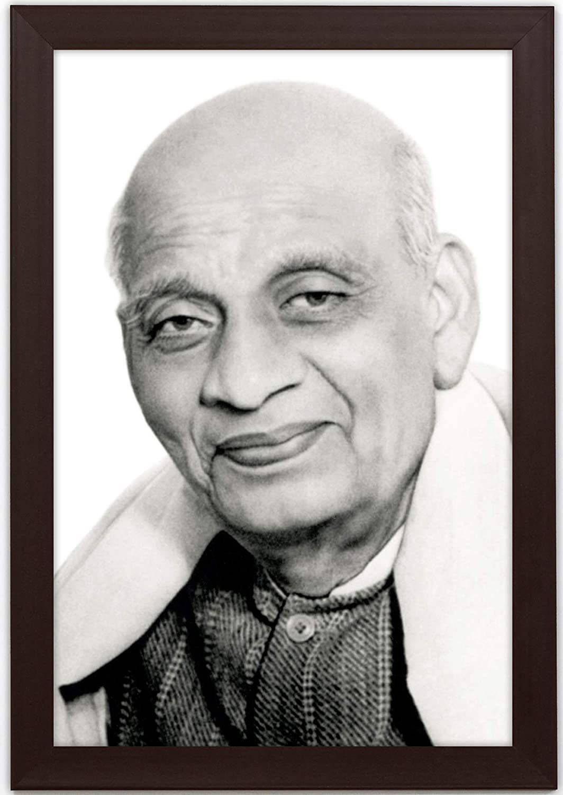

Sardar
Vallabhbhai Patel

Patel was born in Nadiad, Kheda district and raised in the countryside of the state of Gujarat.
Sardar Vallabhbhai Patel, was an Indian independence activist and statesman who served as the first Deputy Prime Minister and Home Minister of India from 1947 to 1950. He was a senior leader of the Indian National Congress.
one of the most influential leaders in Gujarat. He was appointed as the 49th President of Indian National Congress.
As the first Home Minister and Deputy Prime Minister of India, Patel organised relief efforts for partition refugees fleeing to Punjab and Delhi from Pakistan and worked to restore peace.